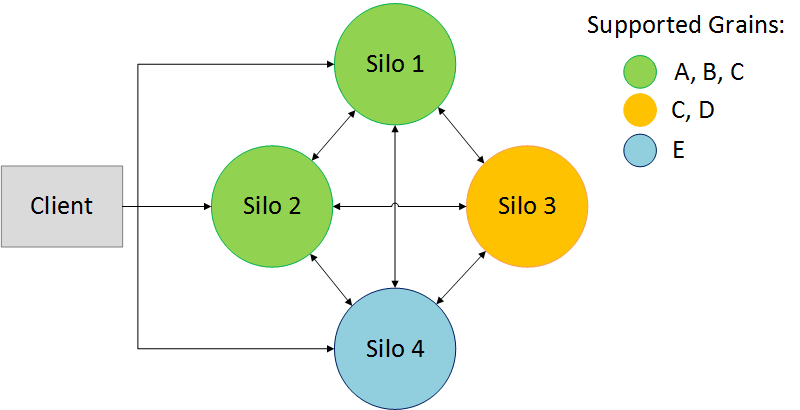

非均质silos
概述
在给定的集群上，silos可以支持一组不同的Grains类型：
在本例中，集群支持类型为一我是说，乙我是说，C类，请丁我是说，E类：
- grains类型
一和乙可存储在silos1和2上。 - grains类型
C类可存储在silos1、2或3上。 - grains类型
丁只能放在silos3上 - grains类型
E类只能存储在silos4上。
所有的silos都应该引用集群的所有Grains类型的接口，但是Grains类应该只被将承载它们的silos引用。
客户端不知道哪个silos支持给定的Grains类型。
给定的Grains类型实现在支持它的每个silos上必须相同。以下方案无效：
在silos1和2上：
public class C: Grain, IMyGrainInterface
{
public Task SomeMethod() { … }
}
在silos3上
public class C: Grain, IMyGrainInterface, IMyOtherGrainInterface
{
public Task SomeMethod() { … }
public Task SomeOtherMethod() { … }
}
配置
不需要配置，您可以在集群中的每个silos上部署不同的二进制文件。但是，如果需要，可以更改silo和客户端检查属性支持的类型更改的间隔类型映射刷新间隔从类型管理选项
出于测试目的，可以使用属性排除雨水类型在里面GrainClass选项，这是要在silos上排除的类型的列表名称。
限制
- 如果受支持的Grain类型集发生更改，则不会通知已连接的客户端。在前面的示例中：如果silo 4离开集群，客户端仍将尝试调用类型为grain的
E类是的。它将在运行时失败，并带有orleansexception。如果客户端是在silos4加入群集之前连接到群集的，则客户端将无法调用类型为E类是的。它会失败的 - 不支持无状态grains：集群中的所有silos必须支持同一组无状态grains。